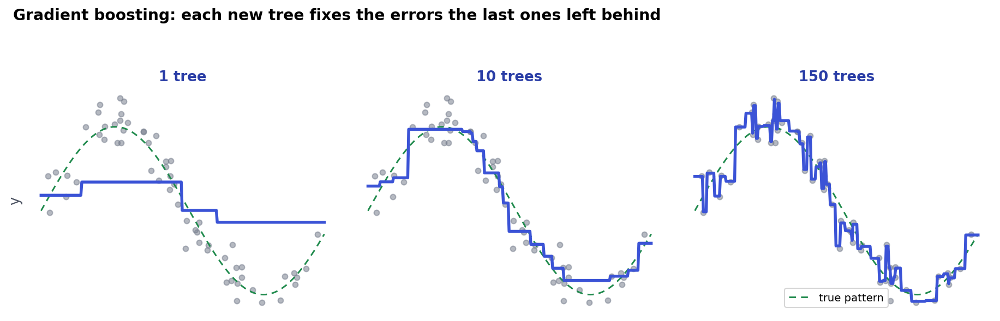

Gradient Boosting
The model that wins most tabular problems.
If you enter a machine-learning competition on tabular data (rows and columns, like a spreadsheet), the winning solution is almost always gradient boosting — XGBoost, LightGBM, or CatBoost. It is the professional's default for structured data: more accurate than a random forest on most problems, and the model you'll reach for again and again at work. The idea behind it is genuinely clever and worth understanding, not just importing.
ConceptFix your mistakes, one tree at a time
A random forest builds its trees in parallel and independently, then averages them. Boosting does the opposite: it builds trees one after another, in sequence, and each new tree is trained specifically to correct the errors the current ensemble still makes. Tree 1 makes a rough prediction; you measure what it got wrong (the residuals); tree 2 is trained to predict those errors; you add a shrunken slice of it to the running total; repeat hundreds of times. Each tree is usually shallow (a "weak learner"), but chained together they compose into a very accurate model. Watch the fit sharpen as trees accumulate:

Concept · the key contrastBagging vs boosting: opposite cures
This contrast is a favourite interview question, so hold it clearly:
- A random forest (bagging) averages many deep, independent, high-variance trees to cut variance. The trees don't talk to each other.
- Gradient boosting chains many shallow, dependent, high-bias trees, each fixing the last's mistakes, to cut bias. Order matters; you can't parallelise it the same way.
Boosting's power comes with a sharper edge: because each tree chases the current errors, it can overfit if you let it run too long or learn too fast. The learning rate (how big a slice of each new tree you add) is the main safety valve — smaller means slower, steadier, usually better, but you need more trees. Learning rate and number of trees are traded off against each other.
Worked exampleFit it, and feel the learning rate
Same three-line API. Here we hold the number of trees fixed and vary only the learning rate, and watch a too-high rate overfit — a big train score with a sagging test score:
from sklearn.datasets import make_classification
from sklearn.model_selection import train_test_split
from sklearn.ensemble import GradientBoostingClassifier
X, y = make_classification(n_samples=600, n_features=10, n_informative=6, random_state=1)
Xtr, Xte, ytr, yte = train_test_split(X, y, test_size=0.3, random_state=1)
for lr in [0.05, 0.3, 1.0]:
gb = GradientBoostingClassifier(n_estimators=150, learning_rate=lr, max_depth=3, random_state=0).fit(Xtr, ytr)
print(f"learning_rate={lr:<4} -> train {gb.score(Xtr, ytr):.2f} test {gb.score(Xte, yte):.2f}")learning_rate=0.05 -> train 1.00 test 0.92 learning_rate=0.3 -> train 1.00 test 0.93 learning_rate=1.0 -> train 1.00 test 0.94
The slow learner (0.05) trains modestly but generalises best; crank the rate to 1.0 and the model nearly memorises the training set while its test score slips — overfitting, live. In practice you use a small learning rate with many trees and stop early when the validation score stops improving.
Interactive labYour turn — tune the learner
The train/test split is loaded and GradientBoostingClassifier is imported. Train a booster with 200 trees, learning_rate 0.05, and max_depth 3, then assign to answer its test accuracy, rounded to 2 decimals.
GradientBoostingClassifier imported. First Run loads scikit-learn.n_estimators=200, learning_rate=0.05, max_depth=3, random_state=0 to GradientBoostingClassifier(...), .fit(Xtr, ytr), then .score(Xte, yte).gb = GradientBoostingClassifier(n_estimators=200, learning_rate=0.05, max_depth=3, random_state=0).fit(Xtr, ytr)
answer = round(float(gb.score(Xte, yte)), 2)A small learning rate with many trees is the reliable recipe — steady gains, less overfitting than a fast learner.
★ Key points to remember
- Gradient boosting builds trees sequentially, each new one trained to correct the residuals (errors) the ensemble still makes.
- It combines many shallow trees (weak learners) to reduce bias — the opposite of a forest, which averages deep trees to reduce variance.
- The learning rate shrinks each tree's contribution; small rate + many trees is the reliable recipe (they trade off).
- It can overfit if run too long or too fast — use a small learning rate and stop early on a validation score.
- In practice you'll use XGBoost / LightGBM / CatBoost — the go-to winners for tabular data.
◆ Practice▸
Show solution & reasoning
A random forest averages many independent trees; averaging can only reduce variance, so adding trees never makes it worse — it just stabilises. Gradient boosting adds trees that each chase the current residuals, so it keeps driving training error down and will eventually fit the noise if you don't limit it (small learning rate, early stopping, shallow trees).
learning_rate=0.5 with n_estimators=50. You suspect a smaller rate would help. What must they change alongside it, and how would you decide the values?Show solution & reasoning
Learning rate and number of trees trade off: if you shrink the rate (say to 0.05), you must increase n_estimators (roughly 10×, to ~500) so the model still learns enough. Decide the pair by cross-validation with early stopping — keep a validation set, add trees until its score stops improving, and take that count. Small rate + early stopping almost always generalises better than a big rate with few trees.
◎ Deep dive: why it's called gradient boosting, the key knobs, and XGBoost/LightGBM▸
Why "gradient" boosting. Each round, the algorithm computes the gradient of the loss function with respect to the current predictions — for squared error that's literally the residual y - ŷ, which is why "fit the next tree to the residuals" is exact for regression. For classification the loss is log-loss and the "residuals" are its gradients, but the idea is identical: each tree takes a step down the loss surface. Boosting is gradient descent, where each step is a whole tree.
The knobs that matter, and how they interact. learning_rate × n_estimators set the total learning (shrink one, grow the other); max_depth (often 3–8) controls how complex each weak learner is; subsample < 1 and colsample add randomness ("stochastic" boosting) that fights overfitting. The professional recipe: a small learning rate, early stopping on a validation set to pick the tree count, and modest depth — then tune the rest.
Why the libraries, not scikit-learn's version. XGBoost, LightGBM, and CatBoost are boosting implementations engineered for speed and accuracy: clever handling of missing values, built-in regularization, histogram-based splits (LightGBM), and native categorical handling (CatBoost). For real tabular work you'll almost always reach for one of these over GradientBoostingClassifier — but the concept you learned here is exactly what they do under the hood.
The money contrast: bagging (forests) averages independent trees to cut variance; boosting adds trees sequentially, each fixing the last's errors, to cut bias — and it overfits if run too fast/long, so you use a small learning rate with early stopping. Name XGBoost/LightGBM as the go-to tabular winners and you sound like you've shipped models.